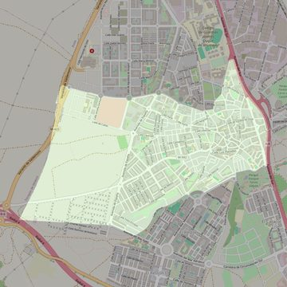

Nuestra Señora de la Asunción
- Arciprestazgo
- Valdemoro
- Población
- Valdemoro
- Dirección postal
- Pza. Ntra. Sra. del Rosario, 1
- Código postal
- 28341
- Extensión
- 3,62 km² (362 ha)
- Teléfono
- 918 950 220
- Correo electrónico
- asuncionvaldemoro@gmail.com
- Información demográfica
- De la parroquia · De la población (Valdemoro) · Del arciprestazgo (Valdemoro)


Descargar mapaLímites según decreto
Partiendo de la confluencia de la autopista A-4 con la entrada al paseo Enrique Tierno Galván, arrancan por el eje del paseo Enrique Tierno Galván (en dirección suroeste; siguen por el eje del paseo Párroco Don Lorenzo (suroeste), por el eje de la avenida Mar Mediterráneo (suroeste), por el eje de la calle Cibeles (suroeste), por el eje de la calle Illescas (suroeste), por el eje de la avenida Mar Egeo (noroeste), por una línea recta imaginaria hasta el límite con el municipio de Torrejón de Velasco (oeste), por los límites de los términos municipales de Valdemoro-Torrejón de Velasco (noreste), por una línea recta imaginaria hasta la calle Rosalía de Castro (este), por el eje de la calle Rosalía de Castro (este), por el eje de la calle Rio Manzanares (sureste), por el eje de la calle Don Ramón Areces (noreste), por el eje de la calle Las Tenerías (noreste), por el eje de la autopista A-4 (suroeste) hasta la confluencia con la entrada al paseo Enrique Tierno Galván, punto de partida. (Boletín Oficial, diciembre 2007, pág.1230 y 1231)